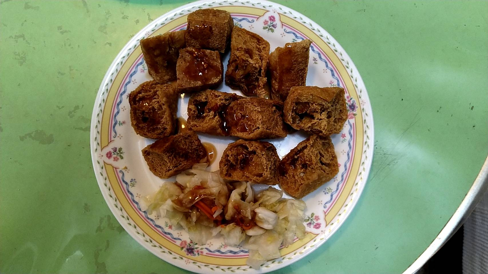

A classic simple tsao dao hu dish served with Taiwanese kimchi
Tsao Dao Hu in Taiwanese means smelly tofu. In traditional Taiwanese night markets, Tsao Dao Hu food stands are mingled with those selling other delicious Taiwanese street food. Some stands are located in the corners of markets because the smell is not everyone's cup of tea. However, follow your nose, and you will find the tsao dao hu stand.
It's basically a tofu dish being fermented and deep fried before it is served. It's very crispy outside and smooth inside. People eat it with Taiwanese Kimchi and Taiwan beer.
How smelly is it? Imagine something related to heated blue cheese. Some scientists will argue that they have different smells but the pungency of both is pretty similiar to me.
According to an unofficial survey, half the visitors to Taiwan and expats in Taiwan don't like the dish and do not even want to go near it. However, another half seem to enjoy the flavour. One of them commented that once your nose adopts the smell, your palate will be hooked by this delicious tofu dish. Some of them like me miss this dish when they are away from Taiwan!
Next time, if you have a chance to visit Taiwan, why not to give this tofu a try and it might be one of the highlights of the trip!
If you would like to find out more about Taiwanese street food or night markets, please check on
wikipedia